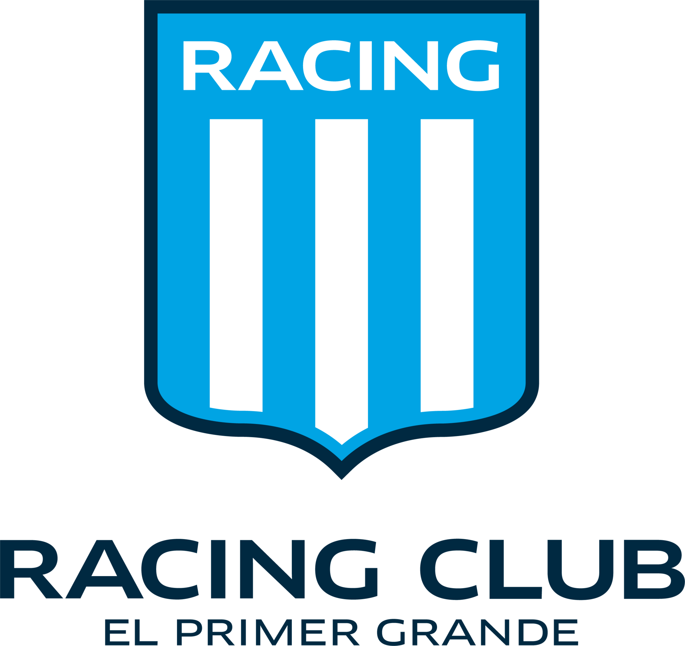

Historia de Racing Club
Racing Club de Avellaneda fue fundado el 25 de marzo de 1903. Es uno de los clubes más importantes del fútbol argentino y es conocido popularmente como "La Academia".
A lo largo de su historia, Racing ganó títulos nacionales e internacionales, y se destaca por la pasión de sus hinchas y sus colores celeste y blanco.

Más información
Cancha de Racing

La cancha de Racing Club es uno de los lugares más emblemáticos del fútbol argentino.
Ubicada en Avellaneda, Buenos Aires.